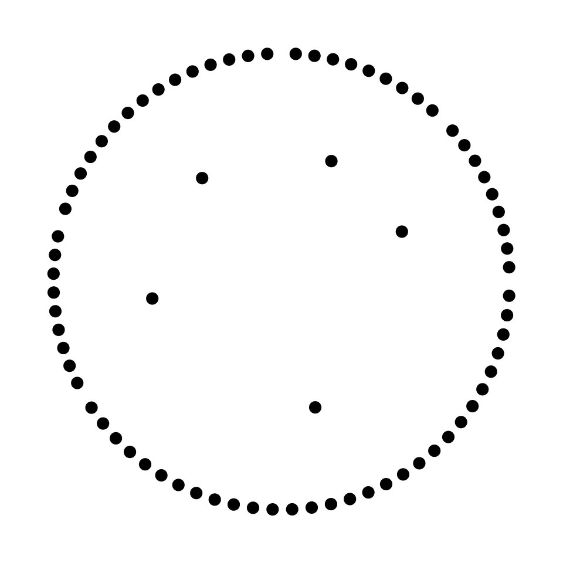
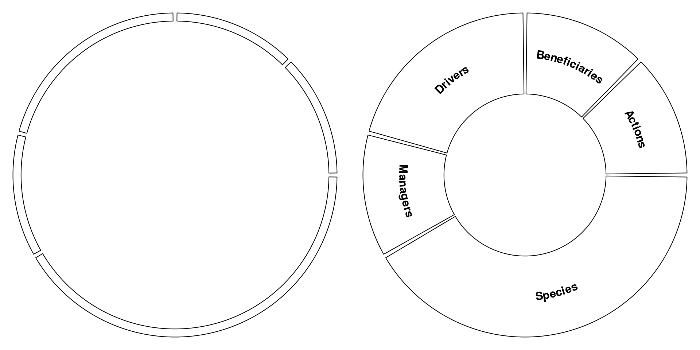
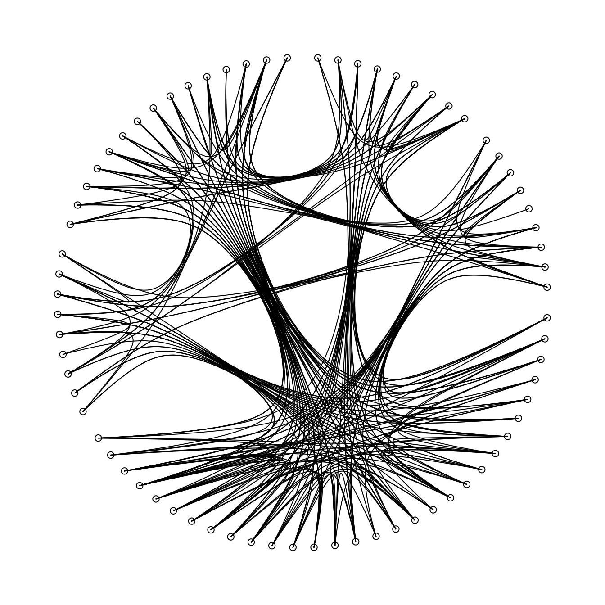
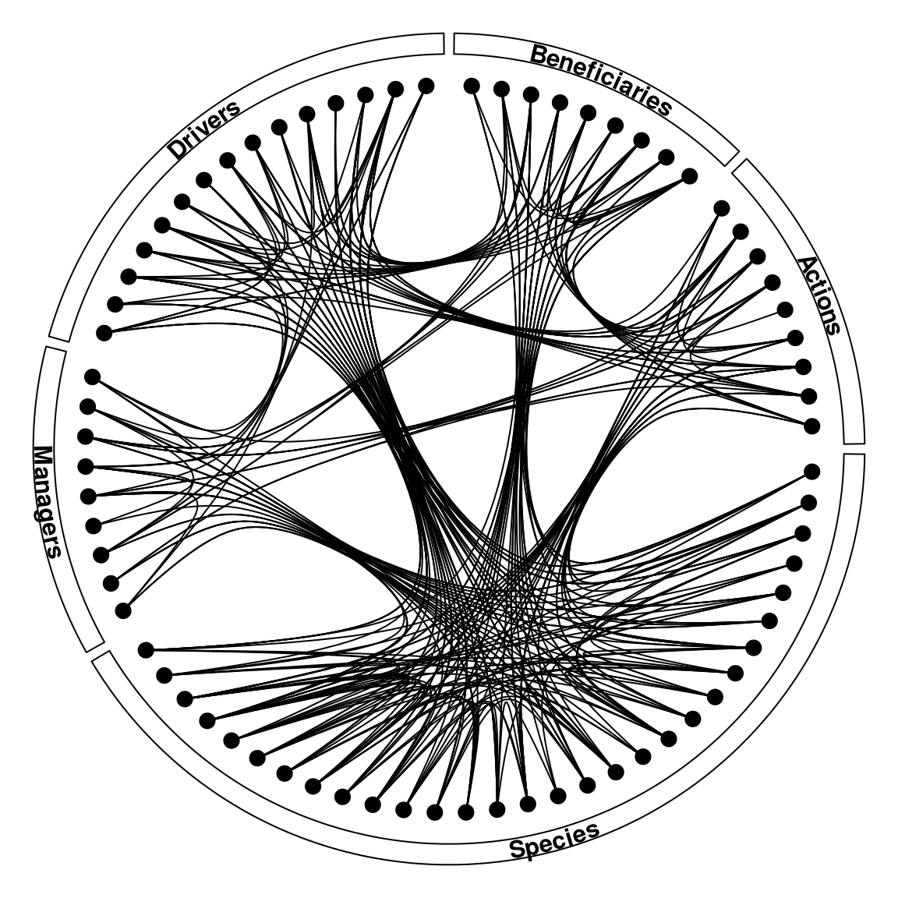
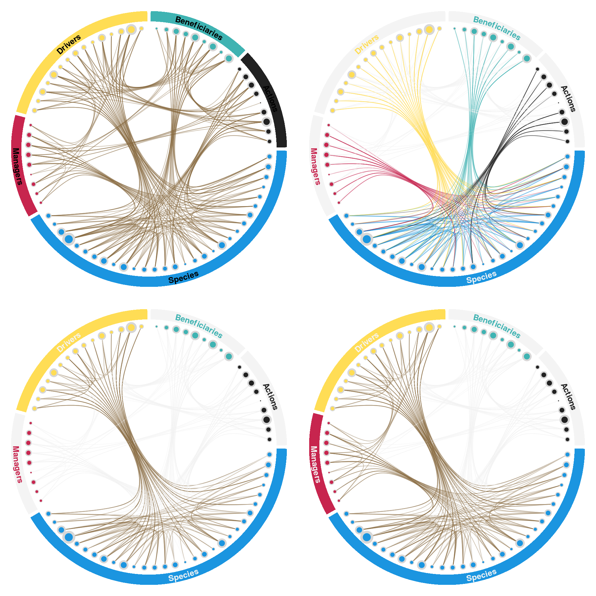

I recently came across a very interesting paper from Laura Dee and collaborators focused on the concept of metanetworks and entitled “Operationalizing Network Theory for Ecosystem Service Assessments” (Dee et al 2017, TREE 32(2):118-130). After reading that article I have begun to revamp the context of my thesis around the concept of metanetworks to include environmental impact assessment and cumulative impacts assessment within such a framework.
Work extensively with networks, you quickly realize that coming up with meaningful and useful visualization can be a bit of a challenge. Thinking about which type of visualization to use for this, the notion of using hierarchical edge bundling became very appealing to capture the complexity of network structure at a glance. While this type of visualization can be close to useless at a fine scale to study individual connections, it can be pretty useful to glean insights as to the overall arrangements of links within networks.
With that in mind, I began going through the material available to make hierarchical edge bundling in R. There is quite a bit of material already available on R, but what I found was always through ggraph and ggplot, which I personally don’t enjoy using all that much (e.g. this). I rather prefer having full control and understanding of what I am doing with my visualizations. So, is here the product of this work to generate the figure I wished to create for my thesis!
library(graphicsutils)
pal_insileco <- gpuPalette("insileco")Let’s start by simulating data for a metanetwork (i.e. a network composed of multiple networks). To make this as simple as possible, I will simply simulate a dataset composed of hierarchical nodes and another one identifying the links between those nodes.
# Individual network nodes
opt <- options()
options(stringsAsFactors = FALSE)
drivers <- data.frame(network = 'Drivers', name = paste0('driver_',1:15))
species <- data.frame(network = 'Species', name = paste0('species_',1:30))
actions <- data.frame(network = 'Actions', name = paste0('action_',1:9))
managers <- data.frame(network = 'Managers', name = paste0('manager_',1:9))
beneficiaries <- data.frame(network = 'Beneficiaries', name = paste0('beneficiary_',1:9))
# Nodes dataframe
nodes <- rbind(drivers, species, actions, managers, beneficiaries)
# Simulate links
links <- data.frame(from = sample(nodes$name, 300, replace = T),
to = sample(nodes$name, 300, replace = T))
links <- links[!duplicated(links), ] # Remove duplicates
links <- links[!links$from == links$to, ] # Remove "cannibalism"
# Combine in a single object
metanetwork <- vector('list', 0)
metanetwork$nodes <- nodes
metanetwork$links <- links
head(nodes)## network name
## 1 Drivers driver_1
## 2 Drivers driver_2
## 3 Drivers driver_3
## 4 Drivers driver_4
## 5 Drivers driver_5
## 6 Drivers driver_6head(links)## from to
## 1 beneficiary_4 species_10
## 2 beneficiary_9 species_17
## 3 species_19 species_3
## 4 species_13 species_7
## 5 species_29 driver_9
## 6 species_10 action_9Now that we have the nodes and links, we need to create the necessary functions that will allow us to position our data on a circular graph.
The first function we need will be used to generate the x and y coordinates of a circle for a given angle and circle radius, which we can obtain with some circle trigonometry.
# Let's begin by creating a function that will give us the x and y coordinates
# of the outside of a circle given a certain radius
coordCircle <- function(theta = NULL, radius = 1) {
data.frame(x = radius * cos(theta),
y = radius * sin(theta))
}
coordCircle(theta = pi, radius = 1)## x y
## 1 -1 1.224647e-16The second function that we need is one that will allow us to distribute groups on the circular plot according to the number of elements composing that group. In essence, we wish to provide the upper and lower boundaries of each individual network composing the metanetwork. We may also want to add a gap between the individual networks on the graph. This will make the visual aspect of the graph more appealing.
bound <- function(metanetwork, gap = .025, addGap = T) {
# Metanetwork list composed of "nodes" and "links"
# Size of gap between groups on the graph
# addGap logical whether to add gap or not
nGroup <- as.data.frame(table(metanetwork$nodes$network))
nGroup$Prop <- nGroup$Freq / sum(nGroup$Freq)
nGroup$spanDeg <- 2 * pi * nGroup$Prop
nGroup$upper <- nGroup$lower <- 0
for(i in 2:nrow(nGroup)) nGroup$lower[i] <- nGroup$lower[i-1] + nGroup$spanDeg[i-1]
nGroup$upper <- nGroup$lower + nGroup$spanDeg
if (addGap) {
nGroup$lower <- nGroup$lower + gap/2
nGroup$upper <- nGroup$upper - gap/2
}
nGroup
}
# Add to metanetworks list
metanetwork$networkGroup <- bound(metanetwork)
metanetwork$networkGroup## Var1 Freq Prop spanDeg lower upper
## 1 Actions 9 0.1250000 0.7853982 0.0125000 0.7728982
## 2 Beneficiaries 9 0.1250000 0.7853982 0.7978982 1.5582963
## 3 Drivers 15 0.2083333 1.3089969 1.5832963 2.8672933
## 4 Managers 9 0.1250000 0.7853982 2.8922933 3.6526914
## 5 Species 30 0.4166667 2.6179939 3.6776914 6.2706853Now we need to get the coordinates of the edges so that we can position them on the graph. We also need to get coordinates for each network so that we can build an internal, hierarchical structure to the distribution of edges on the graph that can be used to plot links between edges. These should be distributed as the user wish within the circle using different radius values. As with the groups, we can add a gap between the edges at the beginning and end of the group for visual differentiation between the group.
nodePos <- function(metanetwork, edgeRad = 0.975, groupRad = 0.5, gapEdge = 0.1, addGap = T) {
# Add x and y columns to nodes and networkGroup data
metanetwork$nodes$y <- metanetwork$nodes$x <- 0
metanetwork$networkGroup$y <- metanetwork$networkGroup$x <- 0
# Get coordinates for all networks
for(i in 1:nrow(metanetwork$networkGroup)) {
# Distribute points within each network space
edgeDeg <- seq((metanetwork$networkGroup$lower[i] + (gapEdge/2)),
(metanetwork$networkGroup$upper[i] - (gapEdge/2)),
length = metanetwork$networkGroup$Freq[i])
# Get position for each edge
nodePos <- coordCircle(theta = edgeDeg, radius = edgeRad)
# Add to nodes data
metanetwork$nodes$x[metanetwork$nodes$network == metanetwork$networkGroup$Var1[i]] <- nodePos$x
metanetwork$nodes$y[metanetwork$nodes$network == metanetwork$networkGroup$Var1[i]] <- nodePos$y
# Distribute network groups in space
groupDeg <- mean(c(metanetwork$networkGroup$lower[i],metanetwork$networkGroup$upper[i]))
# Get position for each group
groupPos <- coordCircle(theta = groupDeg, radius = groupRad)
# Add to group data
metanetwork$networkGroup$x[i] <- groupPos$x
metanetwork$networkGroup$y[i] <- groupPos$y
}
metanetwork
}
metanetwork <- nodePos(metanetwork, edgeRad = .875, groupRad = .5)
head(metanetwork$nodes)## network name x y
## 1 Drivers driver_1 -0.0546519 0.8732916
## 2 Drivers driver_2 -0.1282239 0.8655539
## 3 Drivers driver_3 -0.2008793 0.8516293
## 4 Drivers driver_4 -0.2720989 0.8316172
## 5 Drivers driver_5 -0.3413735 0.8056607
## 6 Drivers driver_6 -0.4082079 0.7739453 head(metanetwork$networkGroup)## Var1 Freq Prop spanDeg lower upper x
## 1 Actions 9 0.1250000 0.7853982 0.0125000 0.7728982 0.4619398
## 2 Beneficiaries 9 0.1250000 0.7853982 0.7978982 1.5582963 0.1913417
## 3 Drivers 15 0.2083333 1.3089969 1.5832963 2.8672933 -0.3043807
## 4 Managers 9 0.1250000 0.7853982 2.8922933 3.6526914 -0.4957224
## 5 Species 30 0.4166667 2.6179939 3.6776914 6.2706853 0.1294095
## y
## 1 0.1913417
## 2 0.4619398
## 3 0.3966767
## 4 -0.0652631
## 5 -0.4829629 # Visualize the positions of the nodes
# Plot
par(mar = c(0,0,0,0))
plot0()
points(metanetwork$nodes$x, metanetwork$nodes$y, pch = 20, cex = 2)
points(metanetwork$networkGroup$x, metanetwork$networkGroup$y, pch = 20, cex = 2)
Now we need a few functions to automate the visualization of a few components of the circular plot.
I actually wish to have a box around the edge of my graph identifying each individual network and their name. To do this, we can use the polygon and plotrix::arctext function.
# We can now use both functions to generate a box for each group on the plot
boxGroup <- function(metanetwork, rad1 = .95, rad2 = 1, colBox = NULL, names = NULL, colNames = NULL, addNames = T, ...) {
# metanetwork = data list composed of 'nodes', 'links' & 'networkGroup'
# rad1 = lower boundary for polygons
# rad2 = upper boundary for polygons
# colBox = color of boxes
# names = names of individual networks
# colNames = color of names
# addNames = logical, add names of networks to graph
if (!is.null(colNames) & length(colNames) == 1) {
colNames <- rep(colNames, nrow(metanetwork$links))
}
if (!is.null(colBox) & length(colBox) == 1) {
colBox <- rep(colBox, nrow(metanetwork$links))
}
for(i in 1:nrow(metanetwork$networkGroup)) {
a <- coordCircle(theta = seq(metanetwork$networkGroup$lower[i],
metanetwork$networkGroup$upper[i],
length = 200),
radius = rad1)
b <- coordCircle(theta = seq(metanetwork$networkGroup$upper[i],
metanetwork$networkGroup$lower[i],
length = 200),
radius = rad2)
polygon(rbind(a, b, a[1L,]), col = colBox[i], ...)
if (addNames) {
middle <- mean(c(metanetwork$networkGroup$lower[i],
metanetwork$networkGroup$upper[i]))
clockwise <- if (middle > pi) F else T
plotrix::arctext(x = as.character(metanetwork$networkGroup$Var1[i]),
radius = mean(c(rad1,rad2)),
middle = middle,
col = colNames[i],
clockwise = clockwise,
font = 2)
}
}
}
# Now we can plot
par(mfrow = c(1,2), mar = c(0,0,0,0))
plot0()
boxGroup(metanetwork, addNames = F)
plot0()
boxGroup(metanetwork, rad1 = .5)
Now we can plot the links between the nodes in our graph using the underlying hierarchical structure identified using the nodePos function created earlier. We can do this using the xspline function.
plotLinks <- function(metanetwork, cols = NULL, ...) {
if (!is.null(cols) & length(cols) == 1) {
cols <- rep(cols, nrow(metanetwork$links))
}
for(i in 1:nrow(metanetwork$links)) {
link <- metanetwork$links[i,]
edgeFromID <- which(metanetwork$nodes$name == link$from)
edgeToID <- which(metanetwork$nodes$name == link$to)
groupFromID <- which(metanetwork$networkGroup$Var1 == metanetwork$nodes$network[edgeFromID])
groupToID <- which(metanetwork$networkGroup$Var1 == metanetwork$nodes$network[edgeToID])
if (metanetwork$nodes$network[edgeFromID] != metanetwork$nodes$network[edgeToID]) {
linkPath <- rbind(metanetwork$nodes[edgeFromID, c('x','y')],
metanetwork$networkGroup[groupFromID, c('x','y')],
metanetwork$networkGroup[groupToID, c('x','y')],
metanetwork$nodes[edgeToID, c('x','y')])
} else {
linkPath <- rbind(metanetwork$nodes[edgeFromID, c('x','y')],
metanetwork$networkGroup[groupFromID, c('x','y')],
metanetwork$nodes[edgeToID, c('x','y')])
}
lines(xspline(linkPath$x, linkPath$y, shape = 1, draw=FALSE), col = cols[i], ...)
}
}
par(mar = c(0,0,0,0))
plot0()
plotLinks(metanetwork, col = 'black')
points(metanetwork$nodes$x, metanetwork$nodes$y)
# The plot
par(mar = c(0,0,0,0))
plot0()
boxGroup(metanetwork)
plotLinks(metanetwork, col = 'black')
points(metanetwork$nodes$x, metanetwork$nodes$y, pch = 20, cex = 2)
Now we can build functions to customize the graph a little bit, e.g. add colors to links and nodes and change the size of the nodes.
First, let’s give a color to individual networks.
colGroups <- function(metanetwork, colPal = pal_insileco) {
# Group colors
metanetwork$networkGroup$cols <- colPal[1:nrow(metanetwork$networkGroup)]
# Node colors
metanetwork$nodes$cols <- NA
for(i in 1:nrow(metanetwork$networkGroup)) {
metanetwork$nodes$cols[metanetwork$nodes$network == metanetwork$networkGroup$Var1[i]] <- metanetwork$networkGroup$cols[i]
}
metanetwork
}
metanetwork <- colGroups(metanetwork, colPal = pal_insileco)
head(metanetwork$nodes)## network name x y cols
## 1 Drivers driver_1 -0.0546519 0.8732916 #ffdd55
## 2 Drivers driver_2 -0.1282239 0.8655539 #ffdd55
## 3 Drivers driver_3 -0.2008793 0.8516293 #ffdd55
## 4 Drivers driver_4 -0.2720989 0.8316172 #ffdd55
## 5 Drivers driver_5 -0.3413735 0.8056607 #ffdd55
## 6 Drivers driver_6 -0.4082079 0.7739453 #ffdd55head(metanetwork$networkGroup)## Var1 Freq Prop spanDeg lower upper x
## 1 Actions 9 0.1250000 0.7853982 0.0125000 0.7728982 0.4619398
## 2 Beneficiaries 9 0.1250000 0.7853982 0.7978982 1.5582963 0.1913417
## 3 Drivers 15 0.2083333 1.3089969 1.5832963 2.8672933 -0.3043807
## 4 Managers 9 0.1250000 0.7853982 2.8922933 3.6526914 -0.4957224
## 5 Species 30 0.4166667 2.6179939 3.6776914 6.2706853 0.1294095
## y cols
## 1 0.1913417 #212121
## 2 0.4619398 #3fb3b2
## 3 0.3966767 #ffdd55
## 4 -0.0652631 #c7254e
## 5 -0.4829629 #1b95e0Second, a function to give a size to nodes based on link frequency.
# Add size to nodes based on frequency of links to each node
nodeSize <- function(metanetwork, freq = T) {
if (isTRUE(freq)) {
nLink <- as.data.frame(table(c(metanetwork$links$from, metanetwork$links$to)), stringsAsFactors = F)
colnames(nLink)[1L] <- 'name'
metanetwork$nodes <- dplyr::left_join(metanetwork$nodes, nLink, by = 'name')
metanetwork$nodes$cex <- (metanetwork$nodes$Freq / max(metanetwork$nodes$Freq))
} else {
metanetwork$nodes$cex <- .33
}
return(metanetwork)
}
metanetwork <- nodeSize(metanetwork)
head(metanetwork$nodes)## network name x y cols Freq cex
## 1 Drivers driver_1 -0.0546519 0.8732916 #ffdd55 6 0.3333333
## 2 Drivers driver_2 -0.1282239 0.8655539 #ffdd55 15 0.8333333
## 3 Drivers driver_3 -0.2008793 0.8516293 #ffdd55 9 0.5000000
## 4 Drivers driver_4 -0.2720989 0.8316172 #ffdd55 5 0.2777778
## 5 Drivers driver_5 -0.3413735 0.8056607 #ffdd55 11 0.6111111
## 6 Drivers driver_6 -0.4082079 0.7739453 #ffdd55 5 0.2777778Finally, we can give a color to links or focus on certain individual networks in the metanetwork, or focus on all the links for a single network.
linkCol <- function(metanetwork, type = 'all', focus = NULL, colLinks = '#876b40', colShadow = '#f4f4f4') {
# metanetwork = list composed of 'nodes', 'links' and 'networkGroup'
# type = type of colors:
# 'all' = all links with single color = `colLinks`
# 'focus' = focus on the links of identified network
# focus = character, name of network(s) to focus on;
# if length(focus) == 1, all links towards a single network
# if length(focus) > 1, links focused on identified networks
# colLinks = color of links of `type` == 'all'
# colShadow = color of links that we are not focused on
# Function
if (type == 'all') {
metanetwork$links$cols <- colLinks
}
if (type == 'focus' & length(focus) == 1) {
# Box colors
focusID <- metanetwork$networkGroup$Var1 %in% focus
colBox <- metanetwork$networkGroup$cols
metanetwork$networkGroup$cols[!focusID] <- colShadow
metanetwork$networkGroup$colNames <- colBox
metanetwork$networkGroup$colNames[focusID] <- colShadow
# Link colors
# metanetwork$links$cols <- paste0(colShadow, 88)
metanetwork$links$cols <- colShadow
linkCol <- data.frame(from = metanetwork$nodes$network[match(metanetwork$links$from,
metanetwork$nodes$name)],
to = metanetwork$nodes$network[match(metanetwork$links$to,
metanetwork$nodes$name)],
stringsAsFactors = F)
linkID <- linkCol$from %in% focus & linkCol$to %in% focus
metanetwork$links$cols[linkID] <- metanetwork$networkGroup$cols[focusID] # "cannibalism"
linkID <- (linkCol$from %in% focus | linkCol$to %in% focus) & !linkID
cols <- paste0(linkCol$from[linkID], linkCol$to[linkID])
cols <- gsub(focus, '', cols)
cols <- match(cols, metanetwork$networkGroup$Var1)
cols <- metanetwork$networkGroup$colNames[cols]
metanetwork$links$cols[linkID] <- cols
}
if (type == 'focus' & length(focus) > 1) {
# Box colors
focusID <- metanetwork$networkGroup$Var1 %in% focus
colBox <- metanetwork$networkGroup$cols
metanetwork$networkGroup$cols[!focusID] <- colShadow
metanetwork$networkGroup$colNames <- colBox
metanetwork$networkGroup$colNames[focusID] <- colShadow
# Link colors
metanetwork$links$cols <- colShadow
linkCol <- data.frame(from = metanetwork$nodes$network[match(metanetwork$links$from,
metanetwork$nodes$name)],
to = metanetwork$nodes$network[match(metanetwork$links$to,
metanetwork$nodes$name)],
stringsAsFactors = F)
linkID <- linkCol$from %in% focus & linkCol$to %in% focus
metanetwork$links$cols[linkID] <- colLinks
}
# Add transparency
metanetwork$links$cols <- paste0(metanetwork$links$cols, '66')
metanetwork
}
metanetwork <- linkCol(metanetwork, type = 'focus', focus = c('Species','Drivers'))
head(metanetwork$links)## from to cols
## 1 beneficiary_4 species_10 #f4f4f466
## 2 beneficiary_9 species_17 #f4f4f466
## 3 species_19 species_3 #876b4066
## 4 species_13 species_7 #876b4066
## 5 species_29 driver_9 #876b4066
## 6 species_10 action_9 #f4f4f466head(metanetwork$networkGroup)## Var1 Freq Prop spanDeg lower upper x
## 1 Actions 9 0.1250000 0.7853982 0.0125000 0.7728982 0.4619398
## 2 Beneficiaries 9 0.1250000 0.7853982 0.7978982 1.5582963 0.1913417
## 3 Drivers 15 0.2083333 1.3089969 1.5832963 2.8672933 -0.3043807
## 4 Managers 9 0.1250000 0.7853982 2.8922933 3.6526914 -0.4957224
## 5 Species 30 0.4166667 2.6179939 3.6776914 6.2706853 0.1294095
## y cols colNames
## 1 0.1913417 #f4f4f4 #212121
## 2 0.4619398 #f4f4f4 #3fb3b2
## 3 0.3966767 #ffdd55 #f4f4f4
## 4 -0.0652631 #f4f4f4 #c7254e
## 5 -0.4829629 #1b95e0 #f4f4f4Now we could wrap all of this in a single function.
plotMetanetwork <- function(metanetwork,
rad1 = .925,
rad2 = 1,
sizeEdge = T,
colPal = pal_insileco,
type = 'all',
focus = NULL,
colLinks = '#876b40',
colShadow = '#f4f4f4',
shadowEdge = T
) {
# Metanetwork = list composed of 'nodes' and 'links'
# rad1 = lower boundary for individual networks
# rad2 = upper boundary for individual networks
# colPal = color palette
# colLinks = color for links
# Function
# Boundaries of individual networks
metanetwork$networkGroup <- bound(metanetwork)
# Node coordinates
metanetwork <- nodePos(metanetwork, edgeRad = .875, groupRad = .5)
# Colors
metanetwork <- colGroups(metanetwork, colPal = colPal)
# Node size
metanetwork <- nodeSize(metanetwork, freq = sizeEdge)
# Link col
metanetwork <- linkCol(metanetwork, type = type, focus = focus, colLinks = colLinks, colShadow = colShadow)
# Plot
par(mar = c(0,0,0,0))
plot0()
boxGroup(metanetwork,
rad1 = rad1,
colBox = metanetwork$networkGroup$cols,
colNames = metanetwork$networkGroup$colNames,
border = 'transparent')
plotLinks(metanetwork,
col = metanetwork$links$cols)
if (shadowEdge) {
points(metanetwork$nodes$x,
metanetwork$nodes$y,
pch = 20,
cex = (metanetwork$nodes$cex * 5),
col = '#d7d7d7')
}
points(metanetwork$nodes$x,
metanetwork$nodes$y,
pch = 20,
cex = (metanetwork$nodes$cex * 3),
col = metanetwork$nodes$cols)
}
# The data
metanetwork <- vector('list', 0)
metanetwork$nodes <- nodes
metanetwork$links <- links
# The plot
par(mfrow = c(2,2), bg = "transparent")
plotMetanetwork(metanetwork)
plotMetanetwork(metanetwork, type = 'focus', focus = 'Species')
plotMetanetwork(metanetwork, type = 'focus', focus = c('Species', 'Drivers'))
plotMetanetwork(metanetwork, type = 'focus', focus = c('Species', 'Drivers', 'Managers'))
opt <- options()